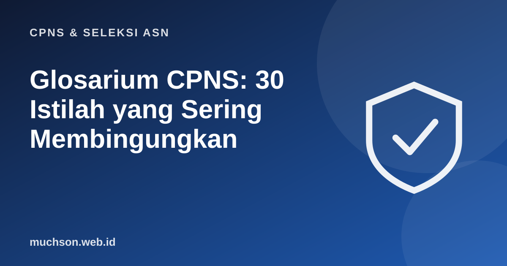

Beranda › Artikel › CPNS & Seleksi ASN
CPNS & Seleksi ASNGlosarium CPNS: 30 Istilah yang Sering Membingungkan
Seleksi CPNS penuh singkatan: SSCASN, CAT BKN, Panselnas, PPK, JF. Salah paham sedikit bisa berakibat salah langkah, misalnya mengira lulus ambang batas sama dengan lulus SKD. Glosarium ini merangkum istilah beserta definisi resminya dari PermenPANRB 6/2024 dan KepmenPANRB 406/2026.

Istilah portal dan sistem
| Istilah | Arti resmi | Catatan |
|---|---|---|
| SSCASN | Sistem Seleksi Calon Aparatur Sipil Negara: portal pelamaran terintegrasi berbasis internet untuk pengadaan Pegawai ASN (Pasal 1 angka 9) | Pelamaran dilakukan secara daring melalui SSCASN (Pasal 25 ayat 1) |
| CAT BKN | Tes Berbasis Komputer (Computer Assisted Test) BKN: sistem seleksi dengan alat bantu komputer untuk mendapatkan lulusan yang memenuhi standar minimal kompetensi (Pasal 1 angka 8) | Dipakai pada SKD dan SKB |
| BKN | Badan Kepegawaian Negara: lembaga pemerintah nonkementerian yang membina dan menyelenggarakan manajemen ASN secara nasional (Pasal 1 angka 18) | Menetapkan nomor induk pegawai |
| Panselnas | Panitia Seleksi Nasional Pengadaan ASN: panitia yang dibentuk Menteri untuk menyiapkan dan menyelenggarakan seleksi calon ASN secara nasional (Pasal 1 angka 19) | Ketuanya mengolah integrasi nilai |
| PPK | Pejabat Pembina Kepegawaian: pejabat yang berwenang menetapkan pengangkatan, pemindahan, dan pemberhentian Pegawai ASN di instansi (Pasal 1 angka 21) | Mengumumkan hasil seleksi dan mengangkat calon PNS |
Istilah tahap dan nilai
| Istilah | Arti | Catatan |
|---|---|---|
| SKD | Seleksi Kompetensi Dasar: mengukur kemampuan dan karakteristik berupa pengetahuan, keterampilan, dan perilaku yang menjadi ciri seorang PNS (Pasal 1 angka 6) | TWK, TIU, TKP |
| SKB | Seleksi Kompetensi Bidang: mengukur kemampuan yang diperlukan dalam pelaksanaan tugas jabatan (Pasal 1 angka 7) | Bobot 60% dalam nilai akhir |
| Nilai Ambang Batas | Nilai batas paling rendah kelulusan seleksi yang harus dipenuhi setiap pelamar (Pasal 1 angka 10) | Berlaku per subtes pada SKD |
| TWK | Tes Wawasan Kebangsaan: nasionalisme, integritas, bela negara, pilar negara, dan bahasa negara | 30 soal, maksimal 150 |
| TIU | Tes Intelegensia Umum: kemampuan verbal, numerik, dan figural | 35 soal, maksimal 175 |
| TKP | Tes Karakteristik Pribadi: pelayanan publik, jejaring kerja, sosial budaya, TIK, profesionalisme, anti radikalisme | 45 soal, maksimal 225 |
| Nilai kumulatif | Jumlah nilai SKD; nilai kumulatif tertinggi SKD adalah 550 | Dipakai sebagai pembeda pada nilai akhir yang sama (Pasal 45 ayat 4) |
| Integrasi nilai | Pengolahan nilai SKD dan SKB menjadi nilai akhir dengan bobot SKD 40% dan SKB 60% | Pasal 45 ayat 3 |
Istilah sanggah dan pengangkatan
| Istilah | Arti | Catatan |
|---|---|---|
| Masa Sanggah | Waktu pengajuan sanggah yang diberikan kepada pelamar terhadap pengumuman hasil seleksi (Pasal 1 angka 11) | Paling lama 3 hari kalender |
| Sanggahan | Pendapat lain terhadap keputusan hasil seleksi yang diajukan pelamar kepada panitia dengan disertai bukti yang dapat diakui kebenarannya (Pasal 1 angka 12) | Diajukan melalui SSCASN |
| Pelamar | Warga negara Indonesia yang melamar menjadi ASN | Syaratnya di Pasal 23 |
| Calon PNS | Pelamar yang lulus seleksi dan diangkat oleh PPK setelah persetujuan teknis dan penetapan nomor induk dari Kepala BKN (Pasal 56) | Menjalani masa percobaan paling lama 1 tahun |
| NIP | Nomor induk pegawai, ditetapkan Kepala BKN | Penerbitan paling lama 25 hari kerja (Pasal 58) |
Istilah jabatan dan instansi
| Istilah | Arti | Catatan |
|---|---|---|
| Jabatan | Kedudukan yang menunjukkan tugas, tanggung jawab, wewenang, dan hak seorang Pegawai ASN dalam satuan organisasi (Pasal 1 angka 14) | |
| JF | Jabatan Fungsional | Materi SKB disusun instansi pembina JF |
| Jabatan Pelaksana | Jabatan yang dapat dilamar pada pengadaan PNS atau PPPK | Materi SKB disusun instansi teknis |
| Instansi Pusat | Kementerian, lembaga pemerintah nonkementerian, kesekretariatan lembaga negara, dan kesekretariatan lembaga nonstruktural (Pasal 1 angka 16) | |
| Instansi Daerah | Perangkat daerah provinsi dan kabupaten atau kota (Pasal 1 angka 20) | |
| Kompetensi Dasar | Kemampuan dan karakteristik berupa pengetahuan, keterampilan, dan perilaku yang menjadi ciri seorang PNS (Pasal 1 angka 1) | Diukur SKD |
| Kompetensi Bidang | Kemampuan yang diperlukan dalam pelaksanaan tugas jabatan agar mampu menampilkan unjuk kerja tinggi (Pasal 1 angka 2) | Diukur SKB |
| Kompetensi Sosial Kultural | Pengetahuan dan sikap terkait interaksi dengan masyarakat majemuk dalam hal agama, suku, dan budaya (Pasal 1 angka 5) | Muncul pada seleksi kompetensi PPPK |
Istilah yang sering tertukar
Dari istilah ke praktik
Setelah paham istilahnya, lihat langsung bagaimana SKD berjalan lewat tryout SKD gratis di LolosSeleksi: format CAT, skor per subtes, dan pengecekan ambang batas.
Tanya jawab
Apa itu SSCASN?
Sistem Seleksi Calon Aparatur Sipil Negara, portal pelamaran terintegrasi berbasis internet untuk pengadaan Pegawai ASN (Pasal 1 angka 9 PermenPANRB 6/2024).
Apa bedanya Panselnas dan panitia seleksi instansi?
Panselnas dibentuk Menteri untuk menyiapkan dan menyelenggarakan seleksi calon ASN secara nasional. Panitia seleksi instansi bekerja di tiap instansi, misalnya pada seleksi administrasi dan penilaian sanggahan.
Apa itu PPK?
Pejabat Pembina Kepegawaian, pejabat yang berwenang menetapkan pengangkatan, pemindahan, dan pemberhentian Pegawai ASN di instansi.
Apa kepanjangan TWK, TIU, dan TKP?
Tes Wawasan Kebangsaan, Tes Intelegensia Umum, dan Tes Karakteristik Pribadi.
Apa itu nilai kumulatif SKD?
Jumlah nilai ketiga subtes SKD, dengan nilai tertinggi 550 (TWK 150, TIU 175, TKP 225).
Referensi
- Peraturan Menteri PANRB Nomor 6 Tahun 2024 tentang Pengadaan Pegawai ASN (teks resmi, BKN) (membuka tab baru)
- Peraturan Menteri PANRB 6/2024, status berlaku dan mencabut Permen 27/2021 (peraturan.bpk.go.id) (membuka tab baru)
- Keputusan Menteri PANRB Nomor 406 Tahun 2026 tentang Nilai Ambang Batas SKD Sekolah Kedinasan (JDIH KemenPANRB, 27 Juli 2026) (membuka tab baru)